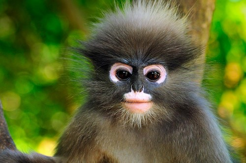

MONKEY
The dusky leaf monkey, spectacled langur, or spectacled leaf monkey (Trachypithecus obscurus) is a species of primate in the family Cercopithecidae. It is found in Malaysia, Burma, and Thailand
WHERE WILL YOU FIND THEM?
You will find the koalas next to the giraffe enclosure.